以 15 kV 直流高壓電場 結合 48 V 輪轂馬達，無須濾網，於源頭攔截輪胎揚起的導電微粒。
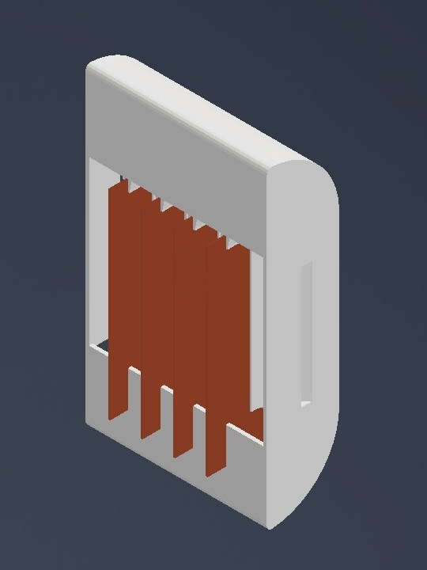
輪胎磨損佔全球初級微塑膠排放來源比例，為第二大宗（Boucher & Friot）
全球乘用車非廢氣微粒排放總量，預估至 2030 年之增幅（OECD）
重型電動車之非廢氣 PM2.5 排放量，較同級燃油車高出的幅度（OECD）
廢氣排放已獲控制。
但電動車更重、扭力更大——
輪胎，仍在一路磨損。
隨著全球電動車市佔率急速攀升，傳統內燃機的廢氣排放雖已獲得控制，但電動車因電池質量增加與瞬間高扭力之特性，輪胎與路面磨損微粒（TRWP）之排放問題並未隨之改善。
依 Boucher 與 Friot 之原始數據，輪胎磨損約佔全球初級微塑膠排放 28%，僅次於人造纖維（35%）。
OECD 評估指出，重型電動車之非廢氣 PM2.5 排放量較同級燃油車高約 3–8%；全球乘用車之非廢氣微粒排放總量，預估至 2030 年將增加約 53.5%。
TRWP 不只包含橡膠，更含有防老劑 6PPD。其氧化產物 6PPD-quinone（6PPD-Q）隨雨水沖刷進入生態圈後，已證實對水生生物具急性毒性，且已於人體尿液中檢出。
國內外針對非廢氣排放微粒（NEE）的處理，多停留在法制研析與成分量測階段；實務硬體上，則多半採用傳統物理濾網或被動式空氣動力學導流。
對車輛行進造成額外風阻、容易堵塞，更會影響電動車的續航里程。
對質量極輕的次微米微粒（PM2.5）捕捉效率低落。
國際新創團隊 The Tyre Collective 已提出靜電捕捉概念並取得專利，其原型亦已進行實驗台架測試；惟公開資料中較少完整之高壓電場流場驗證與模組化機構設計細節。
本裝置的作動原理基於靜電集塵（Electrostatic Precipitation, ESP）技術：含微粒氣流通過施加高壓直流電的平行銅片極板時，微粒在強烈電場中發生極化或帶電，並受橫向庫侖力偏折、吸附於極板上。
q：微粒帶電量；E：極板間均勻電場強度
V：施加直流高壓（15 kV）；d：平行極板間距
受力與電壓成正比、與極板間距成反比
微米等級（PM2.5–PM10）之 TRWP 質量極小、慣性影響較弱，且橡膠基體含高比例導電碳黑，於電場中充電速率較快、飽和帶電量較高，故能在 17 mm 的極板間距內被 15 kV 電場顯著偏折並捕獲。
相對地，導電性較差、粒徑較大的無機礦物顆粒以慣性主導運動，較易直接穿越通道——使裝置具備對特定成分與粒徑微粒的篩選潛力。
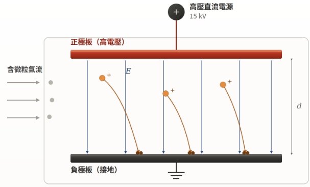
電路由兩條迴路組成：高壓電力路徑把市電逐級升到 15 kV 送上極板；雨滴感測器模組是低壓訊號迴路，電源從手動開關後方分出、降壓至 5 V 供應，並透過繼電器的 IN 端控制 COM 與 NO 的通斷，下雨時自動切斷高壓。
電路方塊圖：110 V 市電經變壓器降為 12 V，依序通過 2 A 保險絲、手動開關、繼電器（COM→NO），再由升壓線圈升到 15 kV 送至銅片極板。在手動開關與繼電器之間分出一條線，降壓至 5 V 後供電給雨滴感測器、Arduino 與繼電器模組；雨滴感測器訊號送入 Arduino，Arduino 再由 D7 控制繼電器 IN 端。
乾燥：D7 輸出觸發電位（低電位觸發），繼電器吸合、NO 導通，15 kV 正常運作。
偵測到水：繼電器即時斷電，高壓關閉；停雨後經 DRY_DELAY 延遲才復電。
手動開關：串接在繼電器 COM 端之前，關閉時直接切斷高壓，Arduino、感測器與繼電器模組也一併斷電，優先權最高。
完整電路方塊圖見 3.2 雨滴感測器安全保護模組（圖七）。
本專題著重實體機構設計與機電系統整合：外殼可搭載於輪轂馬達後方，同時考量氣流導引與高壓絕緣需求，以降低車輛高頻振動與潮濕環境下發生沿面漏電或極板跳火（Arc Discharge）之風險。
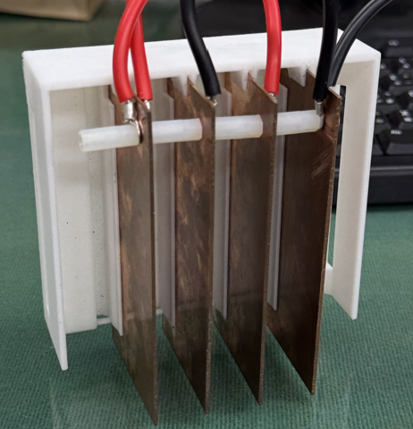
PLA 3D 列印外殼 × 尼龍絕緣柱定距 × 熱熔膠封裝。尼龍柱維持極板間距，防止結構因外界撞擊或馬達高頻振動而變形移位；高壓端子壓接後以尼龍柱與螺帽鎖於銅片上。
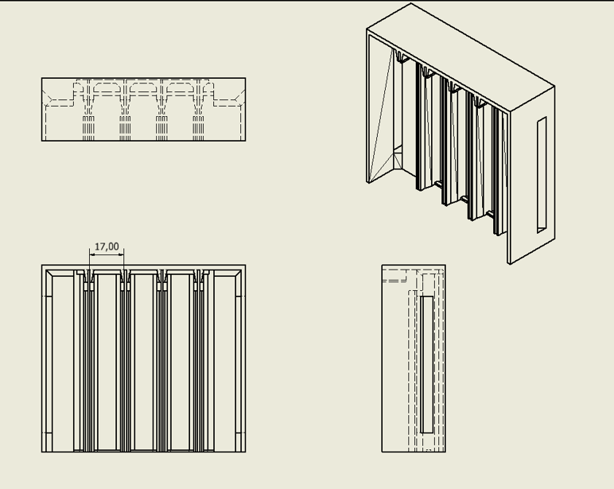
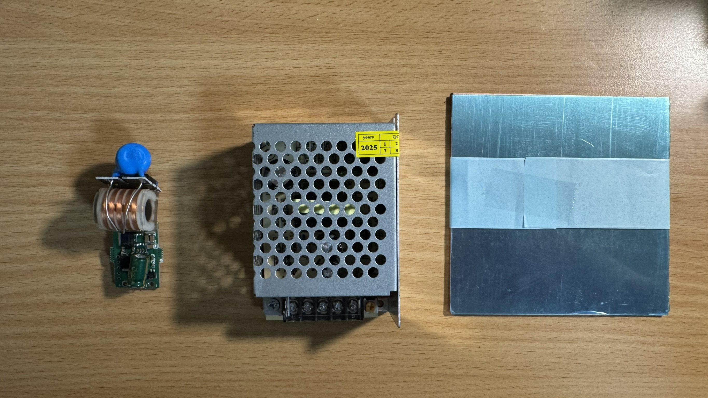
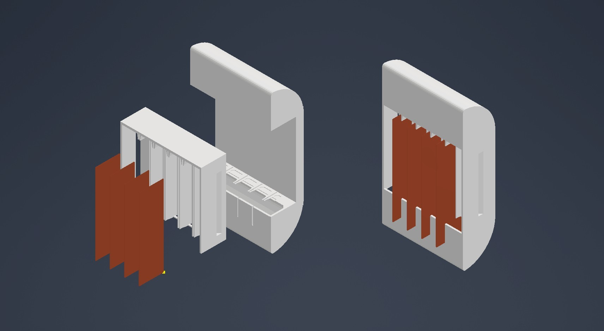
於極板匣下方增設集塵盒空間，外殼底部開設可抽取之開闔式閘門，測試後可直接取出集塵盒秤重或送驗。極板匣可整組自外殼抽出，回收粉塵時無須拆解單片極板，亦便於整批秤重以核算累積捕捉量。
現階段僅支援停駛後人工刮除；後續可朝機械敲擊（rapping）或輔助低壓電暈之自動化方向擴充。
15 kV 高壓若在潮濕環境下持續通電，可能導致沿面漏電或電弧放電。雨滴感測器偵測降雨 → Arduino 判讀 → 控制繼電器，偵測到降雨時自動切斷高壓電場供電。
應用限制：降雨期間路面揚塵雖顯著減少，但此時 TRWP 多隨路面逕流進入排水系統，已非本裝置所能處理之範圍。
Arduino D7 輸出觸發電位（低電位觸發），繼電器吸合、NO 導通，15 kV 電場正常運作。
繼電器釋放、NO 斷開，高壓隨即關閉；停雨後須經延遲時間才重新供電，避免殘留濕氣誤動作。
最高優先權：無論繼電器狀態，電源於實體電路上即被直接切斷；Arduino 與感測器的電源也取自手動開關後方，會一併斷電。
故障安全（fail-safe）：當 Arduino 當機、電源異常或訊號線鬆脫時，繼電器線圈失去磁力，簧片自動彈回斷開位置，高壓電場隨之自動關閉。若採 NC 接點，控制電路故障時高壓反而持續開啟。
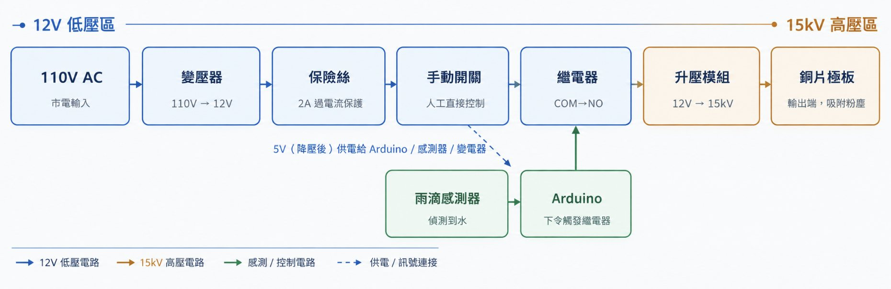
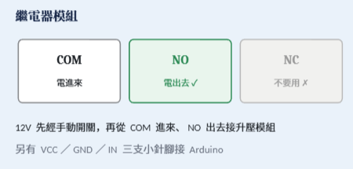
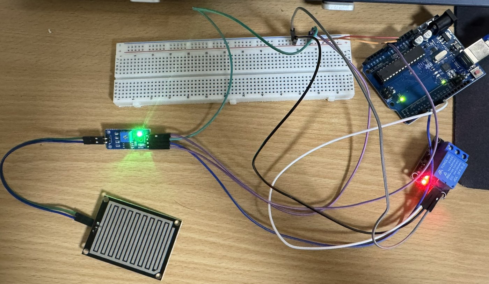
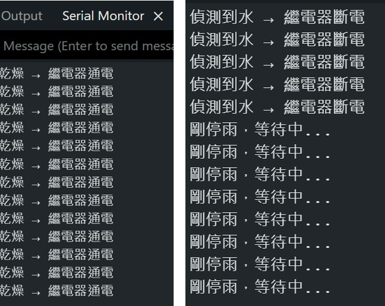
系統上電後先將繼電器設為斷電，確保開機時高壓不會誤啟動；loop() 每 300 ms 讀取一次感測器：偵測到水即記錄時間並斷電，停雨超過 DRY_DELAY 才恢復通電，其餘情況維持斷電並輸出等待訊息。
RAIN_D0 = 2雨滴感測器數位輸出接 D2RELAY_PIN = 7繼電器控制訊號接 D7RELAY_ACTIVE_HIGH = false繼電器模組為低電位觸發DRY_DELAY = 5000UL停雨後延遲復電：測試用 5 秒，正式運作改為較長時間setPower()統一管理繼電器通斷，將「通電／斷電」轉換為對應高低電位Serial.begin(9600)以 9600 bps 輸出運作狀態完整程式碼見書面報告附錄 A。
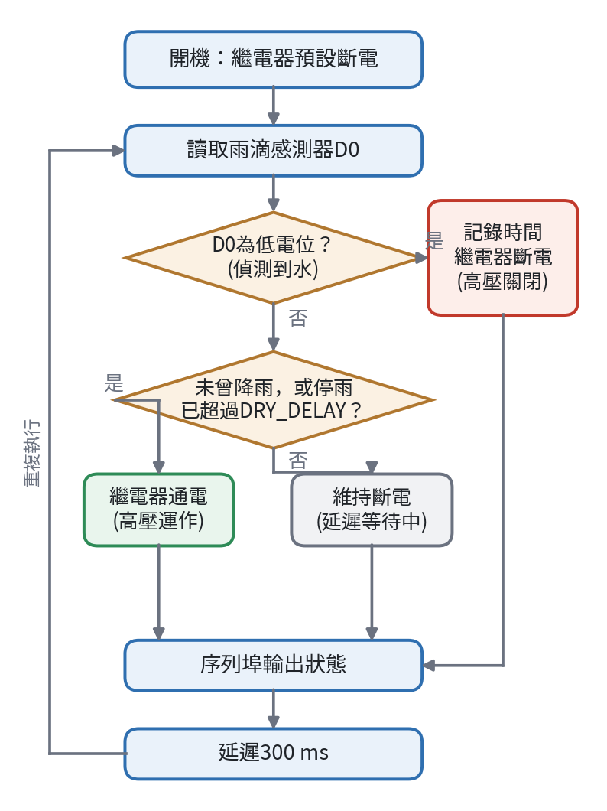
基於專題預算考量，選用電動腳踏車之驅動輪（48 V 輪轂馬達）架設於專用支架上，將靜電捕捉裝置鎖固於馬達後方，模擬摩擦時粉塵隨氣流發散之位置。
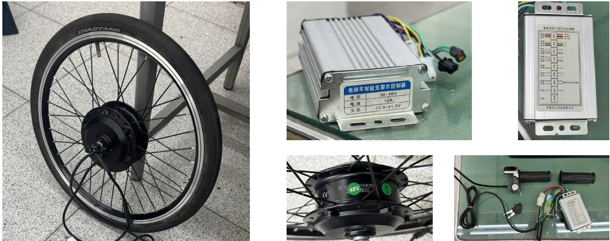
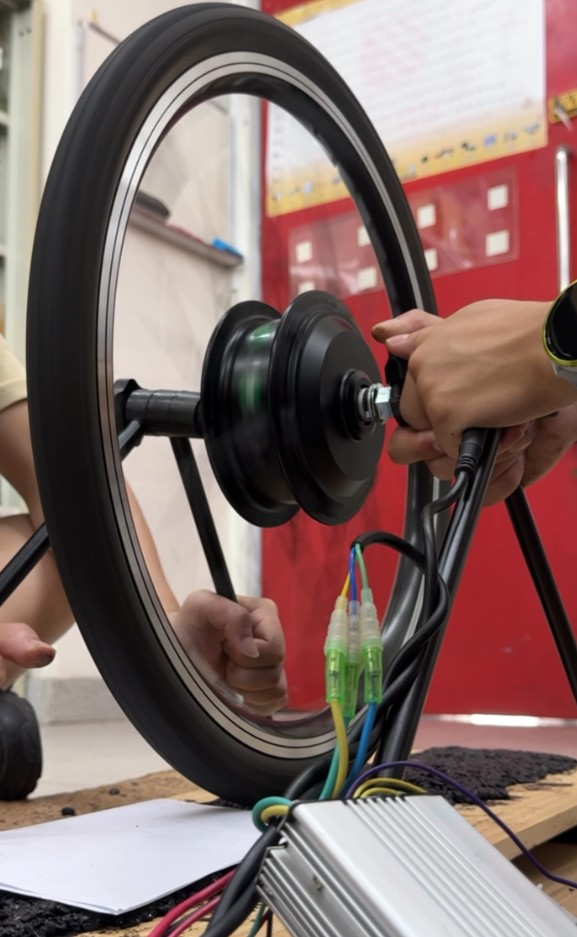
靜態封閉導流 → 動態輪胎摩擦 → 高解析質譜化學鑑定。
η = mplate / (mplate + mescape) × 100%
表三靜態捕捉效率原始量測數據（電場關閉 n=3，標準差 0.25%；電場開啟 n=5，標準差 4.52%）
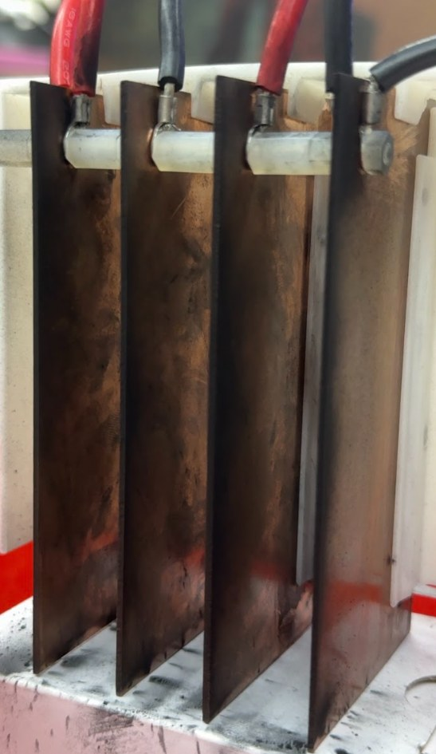
懸停高度 1→5 cm，核心面積由 144.27 降至 46.00 cm²，與 E = V/d 之衰減趨勢一致（表四）。
左／中／右三通道核心面積差異，電場在通道橫向分布均勻（表五）。
實測核心面積衰減指數，較理想平行板 d⁻¹ 平緩，源於有限尺寸電極之近場邊緣效應（表九）。
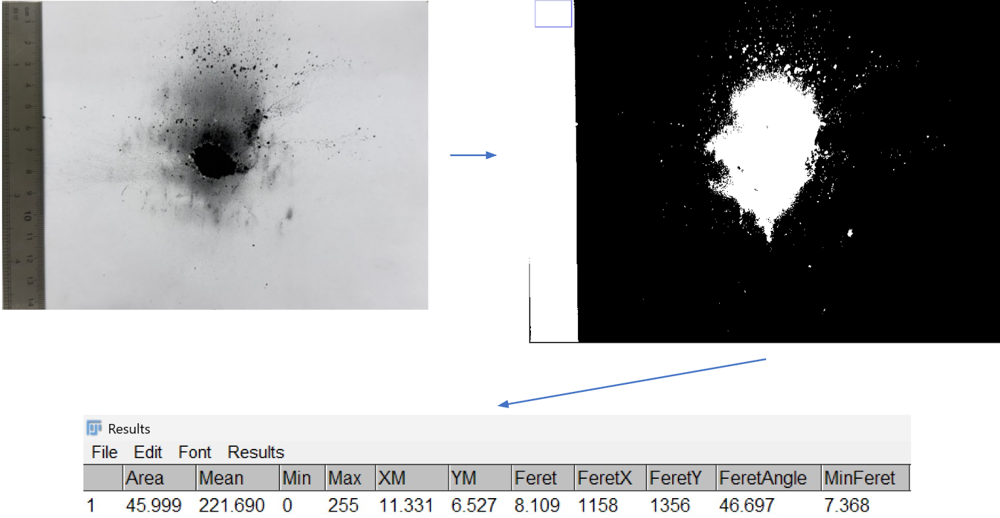
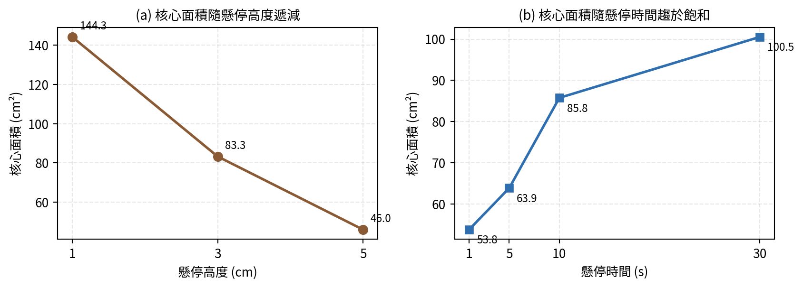
初期測試觀察到「水平 1 cm 之沉積量反低於 3 cm 與 5 cm」——裝置過於貼近胎面時，粉塵尚未擴散至捕捉高度即已通過，且仍處於輪胎旋轉拖曳之邊界層流內。放置位置須依實際擴散包絡線決定，這是本研究建立「粉塵擴散包絡線量測法」的關鍵發現。
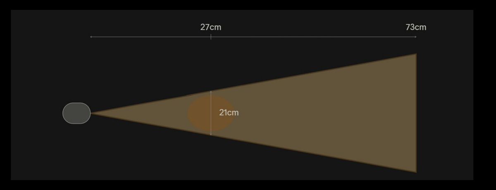
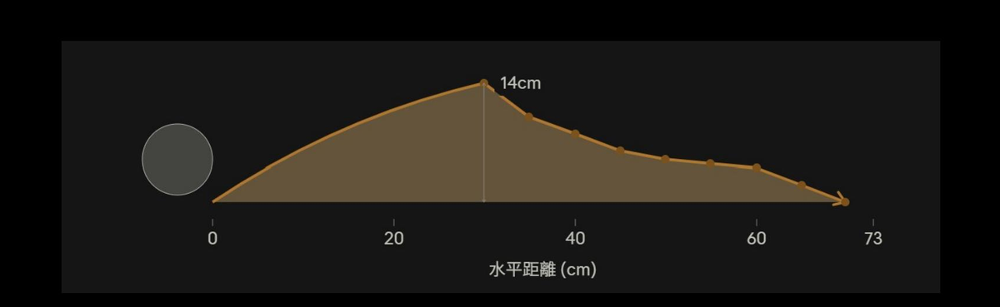
| 測試次別 | 10 s | 20 s | 30 s | 該次整體效率 |
|---|---|---|---|---|
| 第 1 次 | 25.0% | 27.3% | 29.4% | 27.8% |
| 第 2 次 | 22.2% | 23.5% | 24.5% | 23.7% |
| 第 3 次 | 30.7% | 29.2% | 28.6% | 29.2% |
| 平均 | 26.0% | 26.6% | 27.5% | 26.9% |
| 標準差 | 4.3% | 2.9% | 2.6% | 2.9% |
表八350 RPM 下各次動態測試之獨立捕捉效率（裝置位置：水平 25 cm、垂直 0 cm）
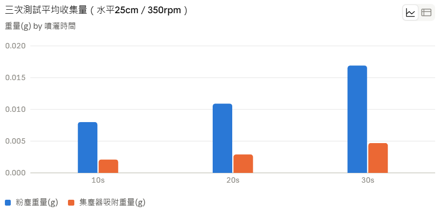
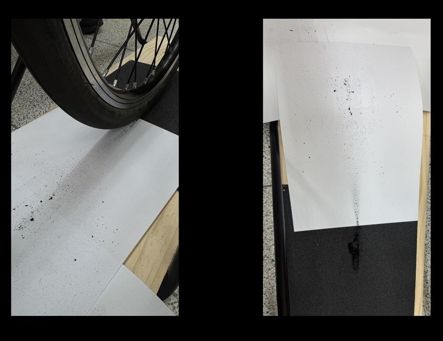
動態摩擦測試取得之粉塵樣本，以深色玻璃罐盛裝、冷藏，並於採集後 24 小時內完成質譜測定。樣品 1 之精確質量與同位素型態兩項證據均與 6PPD 相符，初步支持本裝置所攔截微粒與真實 TRWP 具化學關聯性。
＊目前尚缺乏 6PPD 真品標準品進行同批次比對，尚無法完全排除其他同分子量化合物之可能性，為後續補強重點。
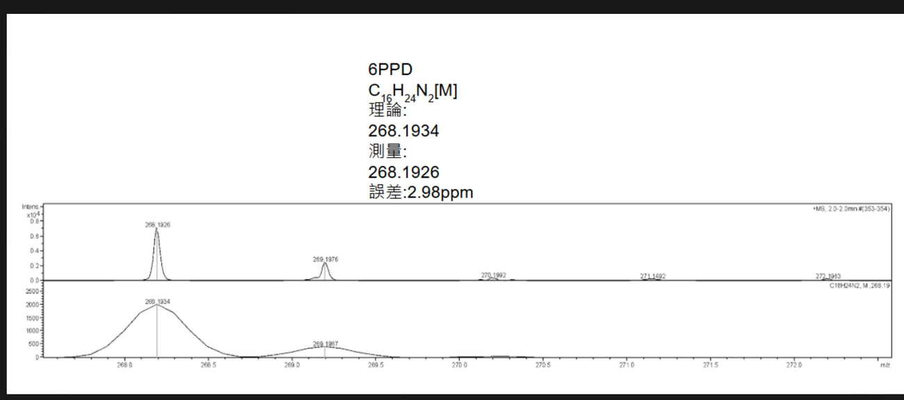
| 比較項目 | 理論／文獻預估 | 本研究實測 | 差異說明 |
|---|---|---|---|
| 電場強度衰減指數 | E ∝ d⁻¹（理想平行板） | 核心面積 ∝ d⁻⁰·⁷¹ | 近場邊緣效應致衰減較緩 |
| 靜態捕捉效率 | 工業 ESP 約 90–99.9% | 16.29% | 極板面積與滯留時間不足 |
| 動態捕捉效率 | 文獻原型 60–80% | 約 27% | 開放流場、未加裝導流罩 |
| 6PPD 精確質量 | 268.1934 Da | 268.1926 Da | 誤差 2.98 ppm，符合門檻 |
表九理論預估值與實驗量測值之比較。差異來源：僅四片銅片、有效面積與滯留時間有限；動態測試未加導流罩（擴散達 73 cm 遠大於捕捉截面）；放置位置僅經單點驗證——同時也指出了後續提升效率的具體方向。
將微粒攔截於源頭、
阻斷其進入逕流之途徑——
本身即是最大的環境效益。
歐盟第七期排放標準已於 2024 年正式通過，首度將煞車微粒排放與輪胎磨耗率納入車輛型式認證規範，為本裝置指出潛在之應用切入點。
大型物流車隊或客運業者加裝此類裝置，有助於納入企業 ESG 永續報告，未來或可對應相關政策補貼。
加入粉塵質量感測器後，長期磨耗數據可回傳車廠或輪胎廠，作為預測性保養（提醒換胎）或路面品質分析依據。
軸重高、里程長、單車 TRWP 排放量高於一般轎車，導入效益相對顯著；輪拱空間與車載電力（通常 24 V）較寬裕；固定調度站便於標準化清理維護。
汽車：以公車為例，安裝於車身後方鈑件底部；後輪處可設計升降機構，平坦路面降下以縮短與輪胎距離，遇上坡或起伏時升起。
機車：國內機車數量龐大；輪胎更換頻率較高，較新之輪胎可釋出含 6PPD 較多之磨耗微粒。後輪支架延伸至後輪後方，概念近似後土除（擋泥板）。
腳踏車：安裝方式最簡單，惟仍需解決供電問題；可採與機車相同之支架方式。
回收之粉塵含 6PPD，不宜作為一般廢棄物處理，須集中送交專業處理，以降低有害物質溶出風險。
改製為可抽出式極板匣，停機後整匣回收；運轉期間維持電場常開以壓制微粒脫落；另試驗於極板塗佈薄層矽油作為黏著介質，並以對照組評估其影響（須留意反電暈 back corona）。
雨滴感測模組遇水氣即斷電；進氣口前端可加裝具傾角之擋水百葉，利用水滴慣性較大的特性使其撞板排出（慣性分離），惟粒徑較大之 TRWP 亦可能同時被攔下，須評估其對捕捉效率之影響；入口不帶電粗網（孔徑 5–10 mm）阻擋落葉砂石；超疏水塗層降低沿面漏電風險；集塵盒底部單向排水閥（duckbill valve）自動排出積水。
「先捕捉、後萃取」策略：裝置端攔截含 6PPD 之橡膠微粒，回收後於實驗室以溶劑萃取，並參考現行 6PPD 與 6PPD-Q 之分析方法進行定量。
評估以金屬沖孔板或金屬網取代實心銅片，以降低材料用量與質量，惟須同時評估有效集塵面積減少，以及孔緣處電場集中所伴隨之跳火風險；材質可改為耐腐蝕性較佳之 SUS 304/316 或鋁合金；量產階段可評估導電塑膠一體射出成型之可行性。
減少有害物質暴露所致之健康風險
改善都市空氣品質
產業技術創新
中原大學機械系 專題團隊
中原大學機械系
3D CAD 模型設計與建模、高壓電路與雨滴感測器模組之電路設計與程式實作、實驗設計、數據分析、統整專題書面報告。
輪轂馬達模組之架設、實驗器材之設計與組裝、電路佈線與焊接、系統絕緣與防漏電工程實作。
查閱 6PPD 採集與檢測相關文獻、測試流程擬定、樣品採集、質譜儀檢測結果統整與分析。